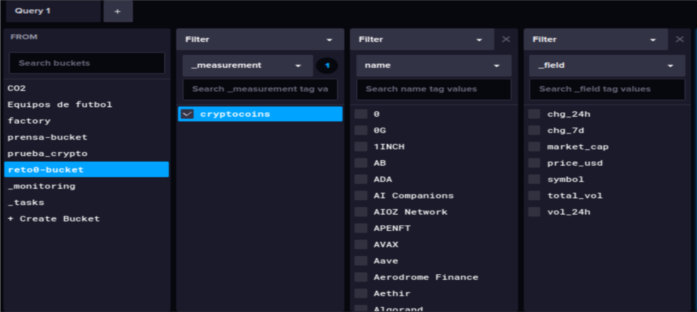

BDA - Big Data & Aplicado
1. Manipulación y Análisis de Datos
Tarea 1: Cargar conjuntos de datos y aplicar transformaciones
Descripción:
En primer lugar, accedimos a una página fiable que nos proporcionaba datos sobre el mercado financiero, nos descargamos los ficheros (stocks.csv y cryptocurrency.csv) y realizamos la limpieza de los ficheros para su corrercta subida de datos a influxDB. La primera subida fué a través de node-RED y la segunda a través de pandas.
Herramientas utilizadas:
- Node-RED
- Python (pandas)
- InfluxDB
- Grafana
Tarea 2: Configurar flujos en Node-RED
Descripción:
El primer archivo lo cargamos a través de Node-RED. Este flujo realiza la lectura de un archivo CSV con datos de acciones, los procesa y los envía a una base de datos InfluxDB.
- timestamp: Inicia el flujo automáticamente.
- stocks.csv: Lee el archivo CSV con los datos bursátiles.
- csv: Convierte el contenido del CSV en objetos JSON.
- function 3: Transforma los datos en puntos para InfluxDB.
- subida a influx batch: Envía los puntos a la base de datos InfluxDB.
Resultados / Comprobaciones:

Tarea 3: Subida de datos desde Pandas
Descripción: El csv de las criptomonedas lo cargamos a través de pandas. Primero, nos aseguramos de que la limpieza de archivo esté bien realizada y después subimos los datos a influxDB. Teniendo en cuenta que tiene que coincidir el bucket de InfluxDB y el creado en Pandas. Además de crear el measurement y de clasificar las criptomonedas por el tag 'name'.
2. Datos en InfluxDB
Tarea 1: stocks.csv
Configuración:
- Bucket: livemarket
- Measurement: stocks
- Fields: last, high, low, chg_, chg_percent, volume.
- Tags: name
Resultado:

Tarea 2: cryptocurrency.csv
Configuración:
- Bucket: livemarket
- Measurement: cryptos
- Fields: symbol,price_usd,vol_24h,total_vol,chg_24h,chg_7d,market_cap
- Tags: name
Resultado:

Tarea 3: Generación de tokens de lectura y escritura
Descripción:
Hicimos Tokens de lectura para grafana, ya que es el que muestra los datos, y Tokens de escritura para Pandas y Node-RED, que son los que realizan las subidas de datos.
Tarea 3: Uso de tags para optimización
Descripción:
En nuestro caso el tag que utilizamos fué para clasificar las distintas criptomonedas y empresas de las acciones por su nomnbre 'name'. Esto nos permitía tener una mejor organización de los datos para luego poder visualizarlos en grafana.
2. Visualización en Grafana
Para poder realizar una investigación precisa y así anticiparnos a los cambios recurrentes que sufren las acciones y las criptomonedas, la mejor manera es poder visualizar los datos a través de gráficos. Muestran la evolución del precio en el tiempo y distintas comparaciones con las que nos permiten hacer todo esto.
Gráficos stocks:

Gráficos cryptos: